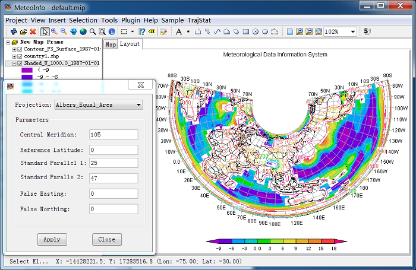
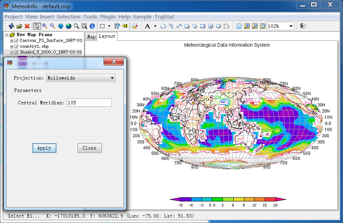
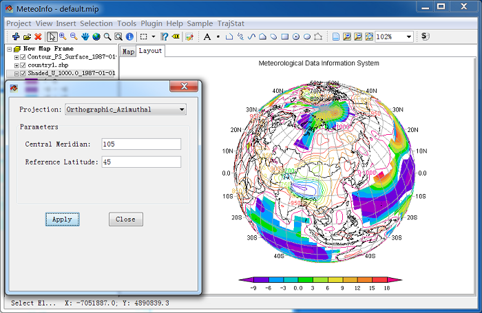

Map Projection¶
Supported on-the-fly projections in GUI:
- Lon_Lat
- Lambert_Conformal
- Albers_Conic_Equal_Area
- North_Polar_Stereographic
- South_Polar_Stereographic,
- Mercator
- Robinson
- Mollweide
- Orthographic
- GeoStationary
- Oblique_Stereographic
- Transverse_Mercator
Click ‘Projection’ sub-menu item under ‘Map’ menu item to open ‘Projection Set’ dialog.

Lambert Conformal:

Albers Conic Equal Area:
North Polar Stereographic:

South Polar Stereographic:

Mercator:

Robinson:

Mollweide:
Orthographic:
GeoStationary:

Oblique Stereographic:

Transverse Mercator:

Sinusoidal: